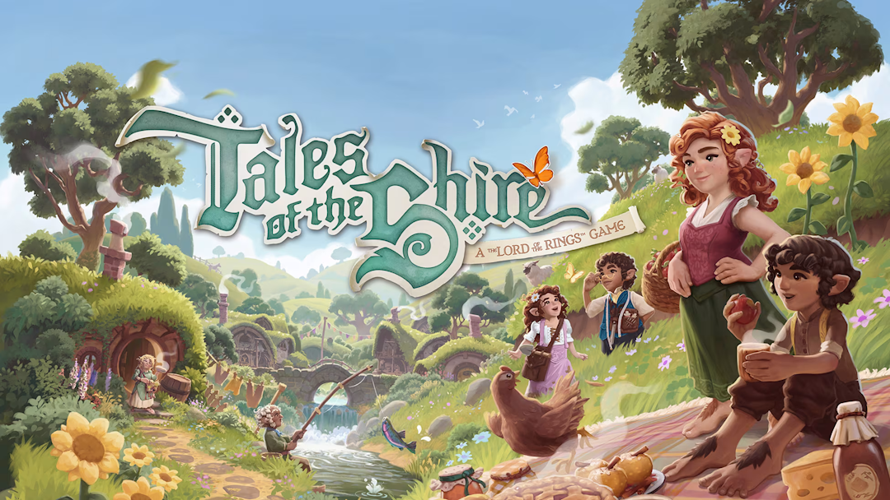
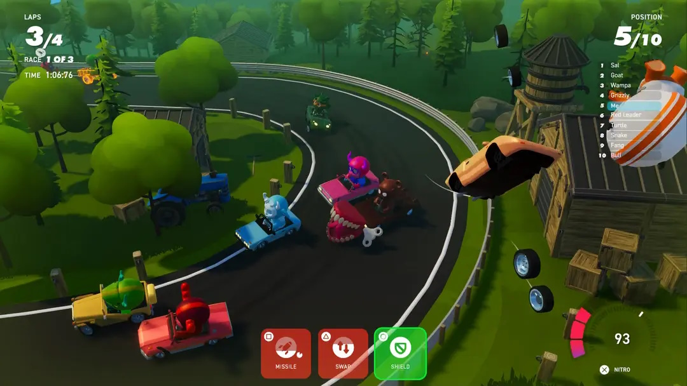
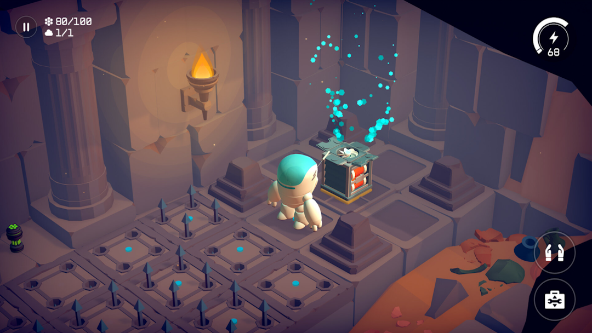
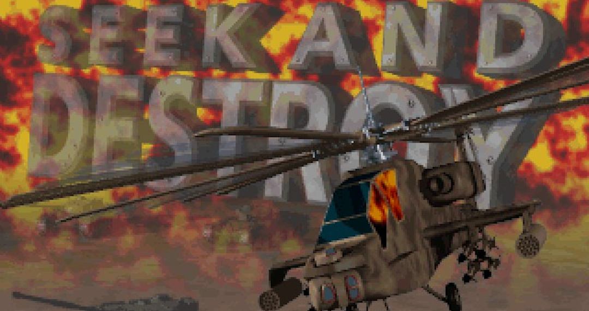
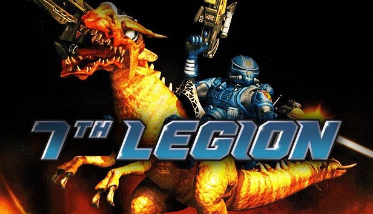
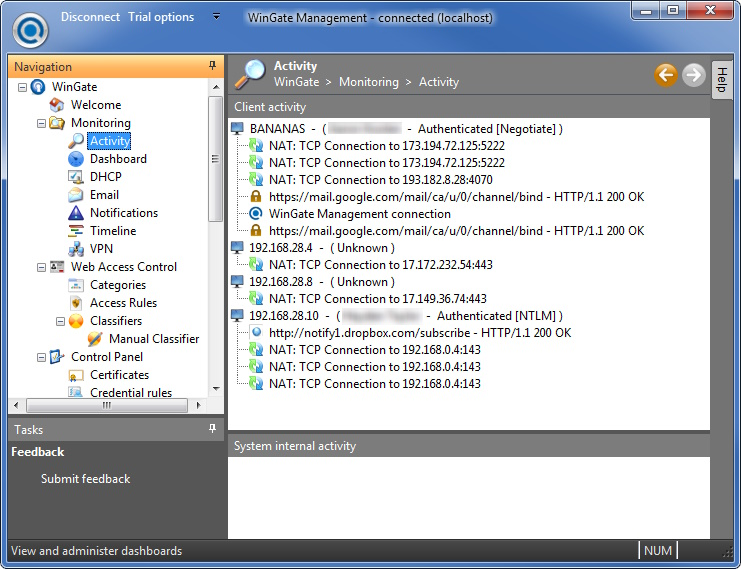

Aaron Koolen-Bourke
Mini Portfolio. Updates and more info to come.
About
|
LinkedIn
|
GitHub

Tales of the Shire (TBA)
Music/SFX playback system and world audio editing tools
Reflection based schema system for importing designer data
Introduced automated project validation via Odin Validator
Full item system refactor to allow for runtime item variations
Introduced async (UniTask) to the game so we could serialise gameplay elements easily

Monster Racing League (PC)
Built network-ready end to end game skeleton
Created and implemented the initial weapon system
Built the lap-counting system

Doomsday Vault (Mac, PC, iOS, Nintendo Switch)
Bootstrapped the game using Entitas Entity Component System
Responsible for the Nintendo Switch Port
Implemented buoyancy, power station, boost-pads, object dragging and killer stones
Created a tool to build and upload the game to EOS and Steam

Seek and Destroy (PC)
The first commercially released game I wrote
Apart from the music player I wrote all code, tools and designed and tested all levels in the game
Tools written on an Amiga and transferred to PC via floppy
Discovered how amazing linkers were :)
Lost all sourcode (tape) in a flood

7th Legion (PC)
Lovingly called "The game we shall not speak of" by myself and best friend who also worked on it I spent a few months helping towards the end of this game.
I built the AI logic. Building, resource collecting and unit control.
I built 7 iterations of the AI which I passed on to the lead developer who was finishing it up at Microprose. I found out years later that only version 4 was integrated into the game. Hire me and provide a good quality whiskey and I will regail you with some interesting stories about this project.

WinGate (PC)
Before re-entering games, I spent 10 years developing WinGate. Too many features to list (See LinkedIn) but a couple were
Runtime localisation system that hooked Win32 APIs (with mhook) and returned localised resources; strings, dialogs and controls.
Automated crashdump retrieval an parsing system. Retrieved info from the crashdump, pulled out the correct version of the source code, grabbed a snippet of code around the offending line and then sent an email to support staff. This saved countless hours of support time and heped us fix bugs even if the customer didn't report them to us.